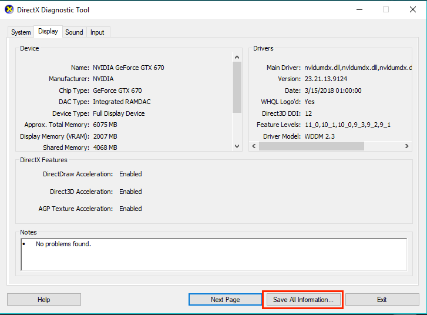
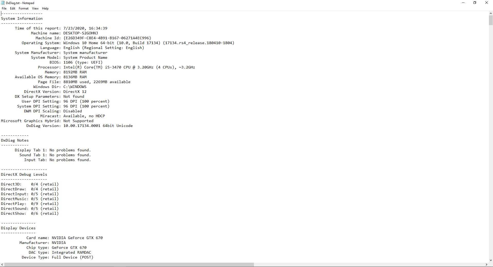

Minecraft Crash Help
Pixel Format Not Accelerated Support
Having trouble updating your drivers?
See this page for steps on how to have someone find the drivers
for you!
Requesting support
We are sorry to hear you are having trouble updating your drivers, please allow our volunteer help community to assist you in resolving your issue. Please visit our to get in contact with our volunteer help community.
Notice: If you are on Windows you will need to generate a "DxDiag report". Please follow the directions found below to generate this "DxDiag report".
If you are not on Windows, please continue to the community support resources
Obtaining a DxDiag
DxDiag, short for DirectX Diagnostics, is a tool used for obtaining system information that is very useful for diagnosing and solving many different issues.
To get a DxDiag report, follow these instructions:
1. Hold your “Windows” key and press “R” together, to bring up a run dialogue.
Type “dxdiag” in the Run window and press enter.
2. You may get a few prompts on verifying WHQL, say yes;
then you should get a window that looks like this:

2. Press the button “Save all information” as shown above. Please take note of where you are saving the file to. (By default it should be Desktop) 3. Find the file you just saved and open it, as shown here

5. Please copy ALL of the text (right click on any empty space, press “select all”, right click again, press “copy”) in this file and paste it onto a text sharing website, such as Ubuntu Paste. First, paste the text that you copied from the file into the text area in the center of the page at Ubuntu Paste. The “Poster” field will be your Minecraft/Discord Username.

Then, press the "Paste!" option and it will redirect you to a URL with all the text you pasted. The URL looks like this: http://paste.ubuntu.com/p/ABCDabcd12/
Copy the URL as seen in the image below
 Now you can visit one of the
Now you can visit one of the